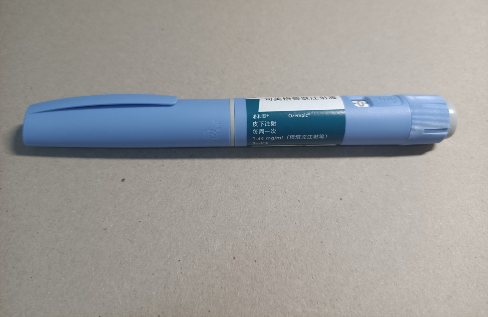
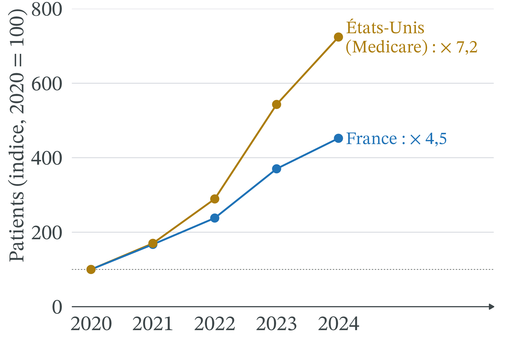
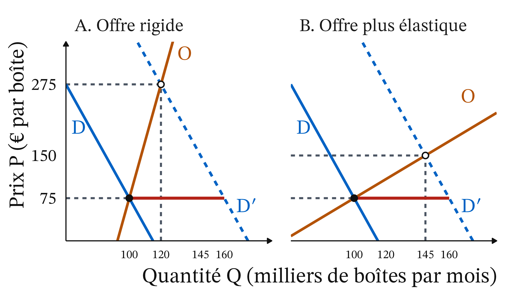
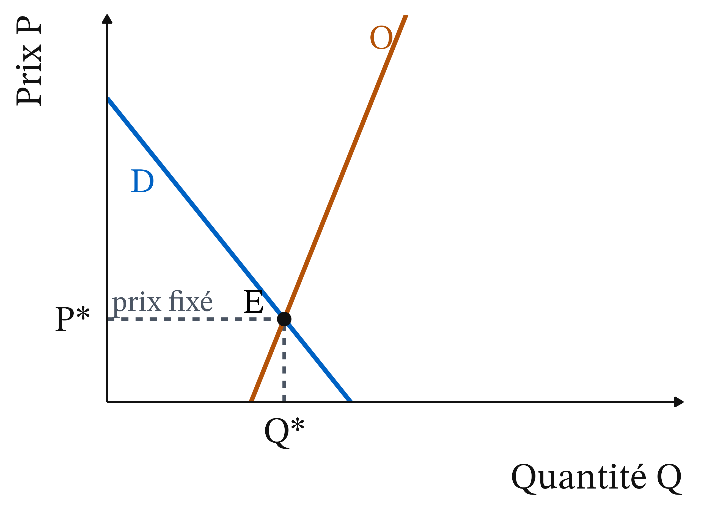
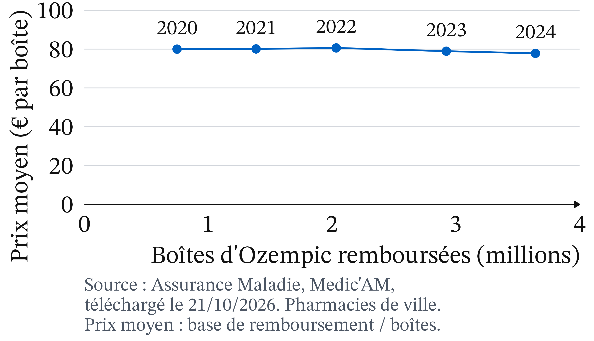

En décembre 2023, des médecins doivent cesser de démarrer des traitements par Ozempic
Déc. 2023 : l’ANSM gèle les nouveaux traitements par Ozempic, Victoza, Trulicity. 5 juin 2025 : reprise pour tous
Cause officielle : « une augmentation importante de la demande mondiale » (ministère de la Santé, 21/05/2024).
Pourtant, son prix n’est pas fixé par un marché mais par l’État

Photo : HualinXMN, CC BY-SA 4.0, Wikimedia Commons (réduite)
Une boîte d’Ozempic 1 mg : 76,58 € ; remboursement de 30 % (Base de données publique des médicaments, 21/10/2026).
Trois outils expliquent pourquoi le prix n’a pas réglé la pénurie
Le prix administré
Le rationnement hors prix
La rigidité de l’offre
Rappel : cinq notions suffisent pour la séance
Équilibre : à P*, offre et demande égales (Q*)
Déplacer une courbe : D → D′
Élasticité e : ΔQ (%) ÷ ΔP (%) ; |e| < 1, demande peu élastique
Brevet : droit exclusif pendant 20 ans
Asymétrie d’information
Un prix fixé par l’État ne s’ajuste pas à la demande
Définition 1 (Prix administré) Prix fixé par une autorité publique, et non par l’offre et la demande ; il ne change que par une nouvelle décision. En France : « fixé par le CEPS » (M. Coris et B. Bégaud, The Conversation, 02/06/2024).
Un choc de demande déplace la courbe vers la droite
Définition 2 (Choc de demande) La quantité voulue à chaque prix change : D → D′. Choc positif : vers la droite.
Pour Ozempic : demande mondiale en hausse, dont des non-diabétiques qui veulent maigrir, un mésusage (ANSM).
Il y a pénurie quand, au prix en vigueur, la demande dépasse l’offre
Définition 3 (Pénurie) Au prix en vigueur, quantité demandée > quantité offerte. Marché libre : le prix monte, l’écart se referme. Prix administré : l’écart demeure.
Quand le prix ne départage plus, une autre règle décide qui est servi
Définition 4 (Rationnement hors prix)
File d’attente : premier arrivé, premier servi
Critère : une condition, par exemple médicale
Quota : quantité limitée par vendeur ou acheteur
À court terme, l’offre d’un médicament est rigide
Définition 5 (Offre rigide) La quantité offerte varie très peu avec le prix. Produire plus exige des usines et des autorisations, qui prennent des mois ou des années. À long terme, l’offre devient plus élastique.
Arrow : les soins médicaux ne sont pas un marché comme les autres
1996 · Linda A. Cicero / Stanford News Service, CC BY 3.0, Wikimedia Commons
Kenneth J. Arrow (1963), « Uncertainty and the Welfare Economics of Medical Care » · école néoclassique. Maladie imprévisible, patient moins informé que son médecin : les soins reposent sur l’assurance, la confiance, des règles collectives.
Un choc de demande sous un prix fixé crée une pénurie

Chaque étape de la chaîne explique la suivante
Choc : D → D′ à chaque prix
Prix fixé : il ne signale plus la rareté
Offre rigide : quantité offerte proche de Q*
Pénurie, donc rationnement
Règle médicale : le dossier décide, pas le revenu
Pénurie n’est pas rareté
Tout médicament est rare. Il y a pénurie seulement quand, au prix fixé, la demande dépasse l’offre, comme entre fin 2023 et juin 2025. Seule la pénurie oblige à rationner autrement que par le prix.
Exemple : à 75 €, l’offre et la demande sont égales à 100
Marché fictif : Q en milliers de boîtes par mois, P en euros.
P (€)
75
125
175
225
275
D
100
90
80
70
60
D′
160
150
140
130
120
O
100
105
110
115
120
P* = 75 €, Q* = 100. e = −10 ÷ 66,7 ≈ −0,15.
Après le choc, il manque 60 000 boîtes au prix fixé
D′ = D + 60 à chaque prix
À 75 € : on demande 160, on offre 100
Il manque 60 milliers de boîtes, soit 60 ÷ 160 = 37,5 % des demandes
À prix libre, l’offre rigide fait surtout monter le prix
À 275 € : 120 demandés, 120 offerts
Prix : +267 % ; quantité : +20 %
Sur 60 000 boîtes manquantes, 20 000 produites en plus ; 40 000 patients renoncent, s’ils paient tout le prix
Recette : 7,5 → 33 millions d’euros par mois
Avec une offre rigide, libérer le prix change surtout qui est servi

À 75 €, les deux offres valent 100 : à prix fixé, seul le déplacement d’une courbe (O → O′, ou une demande qui recule) referme la pénurie.
Pause
15 minutes.
Même pénurie, mais la règle de rationnement change les perdants
Exemple fictif : 100 000 boîtes pour 160 000 demandes.
Groupe
Demandes (milliers)
Diabétiques déjà traités
80
Nouveaux, maladie des artères
20
Autres nouveaux diabétiques
30
Pour maigrir
30
La file d’attente interrompt 30 000 traitements, le critère médical aucun
Prix libre : 120 000 boîtes à 275 €, sans garantie que ce soient les plus malades
Entre 2023 et 2025, l’État a rationné, puis encadré le remboursement
Date
Décision
Déc. 2023
Ne plus commencer de traitement
14/03/2024
Réservé aux diabétiques de type 2 avec maladie des artères
01/02/2025
Formulaire du médecin pour le remboursement (tolérance jusqu’au 01/09/2025)
05/06/2025
Ozempic et Victoza de nouveau disponibles
Sources : ANSM ; Vidal, 16/01/2025 et 03/06/2025
Les boîtes remboursées cessent de croître en 2024, année du rationnement

Compatible avec une quantité bloquée par l’offre, sans le prouver : une baisse de la demande donnerait le même chiffre. Source : Assurance Maladie, Medic’AM (21/10/2026).
Le prix d’Ozempic n’a pas répondu au choc de demande

Boîtes ×4,9 ; prix moyen de 80,0 € à 77,8 € (−2,7 %). Source : Assurance Maladie, Medic’AM (21/10/2026).
Ozempic s’écarte du prix plafond sur quatre points
Un prix négocié avec un seul fabricant, Novo Nordisk
Une offre mondiale et rigide
Une demande qui passe par le médecin et l’assurance
Pour l’État, un choc de demande mondiale
Le modèle éclaire le mécanisme, pas la cause
Il explique pourquoi une pénurie dure à prix fixe et pourquoi il faut alors rationner autrement.
Il ne permet pas de conclure qu’un prix plus élevé aurait évité la pénurie d’Ozempic.
À vous : refaire le raisonnement sur Wegovy et Mounjaro en 2026
Depuis le 15 juin 2026, remboursés à 65 % dans l’obésité sévère (Caducée.net, 29/05/2026).
Le choc : le remboursement baisse le prix payé ; la demande, en fonction du prix public, se déplace-t-elle vers la droite ?
L’offre : peut-elle suivre ?
Le rationnement : quelle règle ?
Le critère médical protège les patients déjà traités, pas les nouveaux
Santé : les nouveaux patients sans maladie des artères perdent
Revenu : à 275 € à sa charge, le modeste renonce avant l’aisé
Territoire, génération : effet non chiffré par les sources de la séance
Fabricant : il ne profite pas de la rente de pénurie
À court terme, un prix plus élevé fait peu produire
Court terme, offre rigide : un prix plus élevé rationne surtout par la capacité à payer
Long terme, médicaments anciens : « la politique du prix toujours plus bas prévaut » (Coris et Bégaud, 02/06/2024)
Le prix ne suffit pas, et la responsabilité du fabricant est discutée
Suisse et Allemagne : prix supérieurs, pénuries aussi, rappelle la rapporteure du Sénat (Public Sénat, 06/07/2023)
Test-Achats : « principalement la faute » de Novo Nordisk (14/11/2023)
Trois jugements restent ouverts : qui servir, combien payer, quelle liberté
Qui servir d’abord ? Les plus malades, les premiers arrivés, ou ceux qui paient le plus ?
Combien payer ? Coût pour l’Assurance maladie, effet incertain à court terme
Quelle liberté pour le médecin ?
Les écoles divergent sur le poids de l’offre de demain et de l’accès aux soins
Approche par le marché : le prix est un signal ; un prix bas prépare les pénuries de demain
Économie de la santé (Arrow) : des priorités médicales collectives servent mieux qu’un prix libre
Le droit agit ici sur la demande remboursée, non sur le prix
Remboursement « subordonné au renseignement par le prescripteur d’éléments relatifs aux circonstances et indications de la prescription » (Vidal, 16/01/2025, d’après le Code de la sécurité sociale, art. L162-19-1). Appliqué à Ozempic depuis le 1er février 2025.
Un prix fixé ne règle pas une pénurie : il faut choisir qui servir
Prix administré : si D → D′, la pénurie demeure
Sans prix, il faut rationner : file, critère ou quota
La règle décide qui subit la pénurie
À prix fixé, seul le déplacement d’une courbe (O → O′, ou une demande qui recule) referme la pénurie
Soins médicaux : pas un marché ordinaire (Arrow, 1963)
Le plan de dissertation : ce que dit l’outil, ce qu’il ne tranche pas
I. Ce que dit l’outil : D → D′ au prix fixé donne une pénurie, qu’il faut rationner.
II. Ce qu’il ne tranche pas : un prix plus élevé aurait-il évité la pénurie ? Qui servir d’abord ?